건축산업기사 (2010-07-25 기출문제)
1과목: 건축계획
1. 백화점 매장의 배치유형 중 직각배치형에 관한 설명으로 옳지 않은 것은?
- 판매대의 설치가 간단하고 경제적이다.
- 판매장 면적을 최대한으로 이용할 수 있다.
- 매장의 획일성에서 탈피하여 자유로운 구성이 용이하다.
- 고객의 통행량에 따라 부분적으로 통로 폭을 조절하기 어렵다.
(정답률: 71%)

2. 부지의 이용률이 가장 높은 아파트의 평면 형식은?
- 계단실형
- 중복도형
- 편복도형
- 집중형
(정답률: 67%)
3. 상점의 판매형식 중 대면판매에 관한 설명으로 옳지 않은 것은?
- 포장, 계산이 편리하다.
- 상품에 대한 설명을 하기에 편리하다.
- 판매원이 정위치를 정하기 용이하다.
- 진열면적이 커져 상품의 구매와 선택이 용이하다.
(정답률: 69%)
4. 사무소 건축의 코어 형식 중 방재상 가장 유리한 것은?
- 편코어형
- 중심코어형
- 양측코어형
- 외코어형
(정답률: 72%)
5. 다음의 각종 상점의 방위에 대한 설명 중 옳지 않은 것은?
- 음식점 : 도로의 남측에 위치하는 것이 좋다.
- 식료품점 : 강한 석양은 상품을 변색시키므로 서향을 피한다.
- 서점 : 가급적 도로의 북측이나 동측을 선택한다.
- 부인용품점 : 오후에 그늘이 지지 않는 방향으로 하는 것이 좋다.
(정답률: 54%)
6. 공장 건축의 레이아웃 형식 중 사람이나 기계가 이동하여 작업하는 방식으로, 조선소와 같이 제품이 크고, 수량이 적은 경우에 사용되는 것은?
- 제품 중심의 레이아웃
- 공정 중심의 레이아웃
- 고정식 레이아웃
- 혼성식 레이아웃
(정답률: 67%)
7. 한식주택과 양식주택을 비교 설명한 것 중 옳지 않은 것은?
- 한식주택은 공간의 융통성이 높고, 양식주택은 공간의 독립성이 높다.
- 한식주택은 평면구성이 폐쇄적, 집중식이고, 양식주택은 개방적, 분산식이다.
- 한식주택의 가구는 부차적 존재이며, 양식주택의 가구는 중요한 내용물이다.
- 한식주택은 좌식생활이며, 양식주택은 입식생활이다.
(정답률: 64%)
8. 페리(C. A. Perry)는 근린주구론에서 6가지 항목에 대한 각각의 계획 원칙을 제시하였는데, 다음 중 이에 해당하는 항목이 아닌것은?
- 규모(Size)
- 경관(Landmark)
- 경계(Boundary)
- 오픈스페이스(Open space)
(정답률: 48%)
9. 사무소 건축의 코어(Core) 계획에 대한 설명 중 옳지 않은 것은?
- 엘리베이터 홀은 출입구 문에 가급적 바싹 근접시켜 동선을 짧게 한다.
- 피난용 특별계단 상호 간의 거리는 법정거리 내에서 가급적 멀리한다.
- 코어 내의 각 공간이 각 층마다 공통의 위치에 있도록 한다.
- 코어 내의 동선과 임대 사무실 사이의 동선은 간단히 한다.
(정답률: 64%)
10. 공장 배치계획에 관한 설명으로 옳지 않은 것은?
- 장래의 확장계획을 고려한다.
- 견학자를 위한 동선을 고려한다.
- 중요한 작업은 공정상 유리한 위치에 둔다.
- 생산, 관리, 연구, 후생 등의 시설은 집중 배치시킨다.
(정답률: 60%)
11. 상점의 매장계획에 관한 설명 중 옳지 않은 것은?
- 고객 쪽에서 상품이 효과적으로 보이게 한다.
- 들어오는 고객과 직원의 시선이 바로 마주치도록 한다.
- 고객을 감시하기 쉬우며, 고객에게 감시받고 있다는 인상을 주지 않도록 한다.
- 고객과 직원동선이 원활하고, 소수의 종업원으로 다수의 고객을 수용할 수 있도록 한다.
(정답률: 84%)
12. 주택의 동선계획에 관한 설명 중 옳지 않은 것은?
- 가사노동의 동선은 되도록 북쪽에 오도록 하고, 길게 한다.
- 개인, 사회, 가사노동권의 3개 동선이 서로 분리되어 간섭이 없도록 한다.
- 주택 내부 동선은 외부 조건과 배실 설계에 따른 출입 형태에 의해 1차적으로 결정된다.
- 동선에는 공간이 필요하고 가구를 둘 수 없다.
(정답률: 73%)
13. 학교 도서관 계획에 대한 설명 중 옳지 않은 것은?
- 서고 계획은 장래의 확장을 고려해야 한다.
- 아동 열람실은 자유개가식이 바람직하다.
- 학교가 소규모일 경우에도 열람실, 토론실, 정리실 등을 독립 설치해야 한다.
- 학교 학습활동의 중심이 될 수 있는 위치가 좋다.
(정답률: 76%)
14. 다음 중 주거계획의 기본 목표와 가장 거리가 먼 것은?
- 가사노동의 경감
- 가족 본위의 주택
- 생활의 쾌적함 증대
- 주거공간의 규모 확대
(정답률: 64%)
15. 주택의 세부계획에 있어서 옳지 않은 것은?
- 거실은 평면계획상 통로나 홀(Hall)로서 사용되지 않도록 한다.
- 식당의 최소면적은 식탁의 크기와 모양, 의자 배치, 주변 통로 등에 의해 결정된다.
- 부엌은 남쪽이나 동쪽에 두어 쾌적하고 능률적인 작업이 되도록 한다.
- 현관의 크기는 방문객의 편의를 위해 크게 하면 할수록 좋다.
(정답률: 65%)
16. 학교 건축에 관한 설명 중 옳지 않은 것은?
- 강당과 체육관을 겸용할 경우 체육관의 목적에 치중하여 계획하는 것이 좋다.
- 체육관은 표준적으로 배구코트를 둘 수 있는 크기가 필요하다.
- 다목적교실은 여러 가지 목적에 맞는 융통성 있는 공간으로서의 성격을 갖는다.
- 일반적으로 교실 채광은 칠판을 향해 좌측 채광을 원칙으로 한다.
(정답률: 73%)
17. 초등학교 저학년에 대해 가장 권장되는 학교운영방식은?
- 달톤형
- 플래툰형
- 교과교실형
- 종합교실형
(정답률: 81%)
18. 다음 중 사무소 건축의 연면적이 10,000m2인 경우, 대실면적으로 가장 알맞은 것은?
- 5,000m2
- 7,000m2
- 8,500m2
- 9,500m2
(정답률: 57%)
19. 사무소 건축의 실 단위계획 중 개실 시스템에 대한 설명으로 옳은 것은?
- 전면적을 유용하게 이용할 수 있다.
- 칸막이벽이 없어서 개방식 배치보다 공사비가 저렴하다.
- 복도가 없어 인공조명과 인공환기가 요구된다.
- 방 길이에는 변화를 줄 수 있으나, 방 깊이에 변화를 줄 수 없다.
(정답률: 62%)
20. 다음 설명에 알맞은 학교 교사(校舍)의 배치형식은?
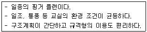
- 폐쇄형
- 분산병렬형
- 집합형
- 종합 계획형
(정답률: 69%)
2과목: 건축시공
21. 셀프 레벨링(Self leveling)재 시공에 대한 설명 중 옳지 않은 것은?
- 실러 바름은 셀프 레벨링재를 바르기 2시간 전에 완료한다.
- 셀프 레벨링재를 부을 때 필요에 따라 고름도구 등을 이용하여 마무리한다.
- 셀프 레벨링재의 표면에 물결 무늬가 생기지 않도록 창문 등은 밀폐하여 통풍과 기류를 차단한다.
- 셀프 레벨링재 시공 중이나 시공 완료 후 기온이 10℃ 이상이 되지 않도록 한다.
(정답률: 40%)
22. 다음 미장재료 중 수경성 미장재료는?
- 회반죽
- 회사벽
- 돌로마이트 플라스터
- 석고플라스터
(정답률: 45%)
23. 다음 중 AE 콘크리트에 관한 설명 중 옳지 않은 것은?
- AE 콘크리트는 무수한 기포를 발생시켜 볼베어링 역할을 하도록 하여 시공연도를 증진시키는 콘크리트이다.
- 공기량이 많을수록 슬럼프는 증대하나 강도는 감소한다.
- 단위수량이 적게 들고, 수밀성이 향상되며, 경화에 따른 발열량이 증대된다.
- 철근과의 부착강도는 적어지지만 내구성 향상, 동결융해 저항성 향상 등의 효과가 있다.
(정답률: 50%)
24. 기초의 비탈면 거푸집 면적 계상의 결정 기준이 되는 비탈면 각도는?
- 15°
- 30°
- 45°
- 60°
(정답률: 63%)
25. 다음 중 사질토와 점토질의 비교로 옳은 것은?
- 점토질은 투수계수가 작다.
- 사질토의 압밀속도는 느리다.
- 사질토는 불교란시료 채집이 용이하다.
- 점토질의 내부마찰각은 크다.
(정답률: 58%)
26. 벽면적 100m2가 되는 1층 창고를 건축할 때 소요 블록 매수로 옳은 것은?(단, 블록은 기본형임.)
- 1,250매
- 1,300매
- 1,350매
- 1,400매
(정답률: 60%)
27. 목공사에서 모서리의 맞춤으로 창호, 수장재 등의 표면 마구리를 감추기 위하여 사용하는 맞춤은?
- 연귀맞춤
- 주먹장맞춤
- 반턱맞춤
- 장부맞춤
(정답률: 66%)
28. 다음 공법 중 지하연속벽공법이 아닌 것은?
- 슬러리월(Slurry wall)공법
- CIP(Cast in place pile)공법
- PIP(Packed in place pile)공법
- 어스앵커(Earth anchor)공법
(정답률: 68%)
29. 다음 미장공법 중 균열이 가장 적게 생기는 것은?
- 회반죽 바름
- 돌로마이트플라스터 바름
- 석고플라스터 바름
- 시멘트모르타르 바름
(정답률: 60%)
30. 내화피복공사를 뿜칠공법으로 시공 시 필수 확인 항목이 아닌것은?
- 두께의 확인
- 밀도의 확인
- 부착강도 확인
- 방청도장 제거 확인
(정답률: 61%)
31. 철근콘크리트공사에서 벽 개구부 시공에 대한 설명 중 옳지 않은 것은?
- 개구부가 기둥, 보에 접하는 부분은 보강을 생략할 수 있다.
- 벽 두께가 250mm일 때는 개구부 각 모서리에 45° 경사로 정착길이의 두 배 길이만큼 철근 보강한다.
- 보강 시 보강철근은 개구부로부터 최소 피복두께를 유지해야 한다.
- 거푸집의 개구부는 시멘트 페이스트가 유출되지 않도록 하기 위해 설치하지 않는다.
(정답률: 62%)
32. 콘크리트 다짐에 사용되는 내부진동기에 관한 설명 중 옳지 않은 것은?
- 콘크리트에 수직으로 세워 삽입한다.
- 콘크리트에 진동을 가할 때에는 철근이나 철골, 거푸집 등에 직접 접촉시켜서는 안 된다.
- 콘크리트로부터 천천히 빼내어 구멍이 남지 않도록 한다.
- 콘크리트를 횡방향으로 이동시킬 목적으로도 사용된다.
(정답률: 64%)
33. 원가절감기법으로 많이 쓰이는 VE(Value engineering)의 적용대상 중 적합하지 않은 것은?
- 원가절감 효과가 큰 것
- 수량은 적으나 반복 효과가 큰 것
- 공사의 개선 효과가 큰 것
- 하자가 빈번한 것
(정답률: 55%)
34. 다음 공사 중 가설공사에 해당되지 않는 것은?
- 비계 설치
- 규준틀 설치
- 현장사무실 축조
- 거푸집 설치
(정답률: 65%)
35. 철근의 배근 방법에 대한 설명으로 옳지 않은 것은?
- 기둥 주근의 이음은 층높이의 2/3 하부에 둔다.
- 띠철근은 주근을 세우고 거푸집을 짜기 전에 배근 결속한다.
- 벽은 먼저 한 쪽 거푸집을 짜고 철근 조립을 완료한 후 다른 편의 거푸집을 짠다.
- 벽의 세로철근의 하부는 바닥판에, 상부는 기둥에 깊이 정착한다.
(정답률: 45%)
36. 미장공사의 일반적인 주의사항 중 옳지 않은 것은?
- 양질의 재료를 사용하여 배합을 정확하게 한다.
- 바탕면에는 물축임을 금한다.
- 바탕면에는 부착이 잘 되게 면을 거칠게 해둔다.
- 바름두께는 고르게 한다.
(정답률: 69%)
37. 혼화재의 일종인 포졸란(Pozzolan)에 대한 설명으로 옳지 않은 것은?
- 시공연도가 좋아지고 재료분리가 적어진다.
- 바닷물에 대한 화학적 저항성이 커진다.
- 수화작용이 빨라지고 발열량이 증가한다.
- 수밀성이 좋아지며 장기강도가 증가한다.
(정답률: 53%)
38. 철골공사의 녹막이칠을 하지 않는 부분에 해당되지 않는 것은?
- 현장 용접을 하는 부위
- 콘크리트에 매립되지 않는 부분
- 고장력볼트 마찰접합부의 마찰면
- 조립에 의하여 면 맞춤되는 부분
(정답률: 67%)
39. 외기의 영향으로 인한 외장재의 성능을 사전에 검토하기 위해 실시하는 실물모형시험(Mock-up test)의 성능시험 항목에 해당하지않는 것은?
- 풍동시험
- 기밀시험
- 정압수밀시험
- 동압수밀시험
(정답률: 46%)
40. 건축용으로 사용되는 다음 금속재 중 상호 접촉 시 가장 부식되기 쉬운 것은?
- 구리
- 알루미늄
- 철
- 아연
(정답률: 64%)
3과목: 건축구조
41. 다음 그림과 같은 단면의 핵에 대한 거리를 올바르게 구한 것은?
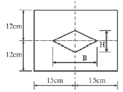
- B=8cm, H=10cm
- B=10cm, H=8cm
- B=5cm, H=4cm
- B=4cm, H=5cm
(정답률: 55%)
42. 기초 저면 2.5×2.5m의 독립기초에 편심하중이 작용하여 축방향력 400kN(기초자중, 상재하중 및 흙의 중량 포함), 모멘트 120kNㆍm를 받을 경우, 기초 저면의 편심거리는 얼마인가?
- 0.2m
- 0.3m
- 0.4m
- 0.5m
(정답률: 52%)
43. 철근콘크리트 보의 인장 이형철근 정착길이 보정계수와 관련이 없는 것은?
- 철근배치위치계수
- 에폭시도막계수
- 경량콘크리트계수
- 강도감도계수
(정답률: 40%)
44. 그림과 같은 기둥의 단면이 150×150mm일 경우 이 기둥의 오일러(Euler) 좌굴하중은?(단, 탄성계수 E=8×103MPa)
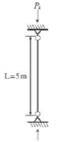
- 133.2kN
- 154.6kN
- 176.9kN
- 198.7kN
(정답률: 39%)
45. 콘크리트의 공칭전단강도가 VC=30kN, 철근의 공칭전단강도가 VS=20kN일 때 설계전단강도는?(단, 전단력에 대한 강도감소계수는 0.75)
- 64.8kN
- 58.4kN
- 37.5kN
- 32.7kN
(정답률: 50%)
46. 철근콘크리트구조에 대한 설명 중 옳지 않은 것은?
- 철근의 피복두께는 주근의 중심으로부터 콘크리트 표면까지의 최단거리를 말한다.
- 철근의 표면상태와 단면모양에 따라 부착력이 좌우된다.
- 단순보에 연직하중이 작용하면 중립축을 경계선으로 위 쪽에는 압축응력이 생긴다.
- 콘크리트와 철근이 강력히 부착되면 철근의 좌굴이 방지된다.
(정답률: 65%)
47. 철근콘크리트 부재의 전단철근으로 적합하지 않은 것은?
- 주인장철근에 30°의 각도로 설치된 스터럽
- 주인장철근에 30°의 각도로 구부린 굽힘철근
- 주인장철근에 45°의 각도로 구부린 굽힘철근
- 스터럽과 굽힘철근의 조합
(정답률: 47%)
48. 그림과 같은 캔틸레버보에서 고정단의 휨모멘트는?
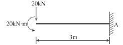
- -20kNㆍm
- -40kNㆍm
- -60kNㆍm
- -80kNㆍm
(정답률: 36%)
49. 그림과 같은 독립기초의 기초 저면에 생기는 최대압축응력은?
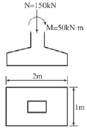
- 160kN/m2
- 150kN/m2
- 140kN/m2
- 130kN/m2
(정답률: 32%)
50. 강도설계법에 의한 철근콘크리트설계에서 보의 휨강도 산정시 기본 가정으로 옳지 않은 것은?
- 철근과 콘크리트의 변형률은 중립축으로부터의 거리에 비례한다.
- 콘크리트의 인장강도는 무시한다.
- 콘크리트 변형률과 압축응력의 분포 관계는 직사각형, 사다리꼴, 포물선형 등으로 가정할 수 있다.
- 콘크리트의 압축연단에서의 극한변형률은 0.03이다.
(정답률: 37%)
51. 강도설계법에서 옥외의 공기나 흙에 직접 접하지 않는 슬래브의 최소 피복두께는 얼마인가?(단, 현장치기 콘크리트이며 D35 이하의 철근 사용)
- 20mm
- 40mm
- 50mm
- 60mm
(정답률: 31%)
52. 다음 그림과 같은 기둥에서 띠철근(Hoop)의 최대 간격은?(단, 주근은 4-D25, 띠철근은 D10임.)
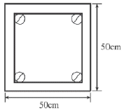
- 350mm
- 400mm
- 480mm
- 500mm
(정답률: 45%)
53. 그림과 같은 트러스에서 힌지 지점인 A지점의 반력(수평반력과 수직반력의 조합)의 크기는?
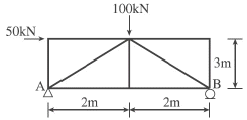
- 32.8kN
- 48.4kN
- 51.5kN
- 62.1kN
(정답률: 43%)
54. 그림과 같은 T형 단면의 X축에 대한 단면1차모멘트는?
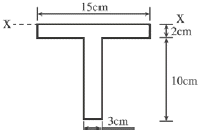
- 200cm3
- 220cm3
- 240cm3
- 260cm3
(정답률: 49%)
55. 그림과 같은 단면의 X축에 대한 단면2차모멘트는?
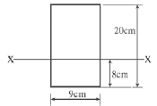
- 6,000cm4
- 6,270cm4
- 6,720cm4
- 7,260cm4
(정답률: 37%)
56. 그림과 같은 구조용 강재의 단면2차반경이 2cm일 때 세장비(λ)는 얼마인가?
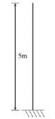
- 100cm
- 200cm
- 350cm
- 500cm
(정답률: 40%)
57. 그림과 같은 단순보에서 중앙부 최대휨모멘트가 80kNㆍm일 때 부재길이(l)는?
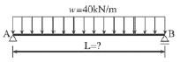
- 2m
- 3m
- 4m
- 5m
(정답률: 57%)
58. 길이가 5m이고 단면적이 500mm2인 막대에 60kN의 축방향 인장력을 작용시켰을 때 막대의 늘어난 길이는?(단, 막대의 탄성계수E=2.1×105MPa)
- 1.98mm
- 2.86mm
- 3.54mm
- 5.04mm
(정답률: 47%)
59. 다음 중 건물의 부동침하 원인으로 가장 거리가 먼 것은?
- 지반이 연약한 경우
- 이질 기초를 한 경우
- 지하실을 강성체로 설치한 경우
- 경사지반에 놓인 경우
(정답률: 71%)
60. 그림과 같은 단면에 전단력 V=18kN이 작용할 경우 최대전단응력도는?
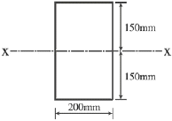
- 0.45MPa
- 0.52MPa
- 0.58MPa
- 0.64MPa
(정답률: 56%)
4과목: 건축설비
61. 다음과 같은 특징을 갖는 보일러는?
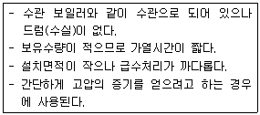
- 주철제보일러
- 노통연관보일러
- 관류보일러
- 입형보일러
(정답률: 61%)
62. 합성수지관배선공사에 관한 설명으로 옳지 않은 것은?
- 화학공장, 연구실의 배선 등에 사용된다.
- 열적영향을 받기 쉬운 곳에 주로 사용된다.
- 관 자체가 절연체이므로 감전의 우려가 없다.
- 기계적 외상을 받기 쉬운 곳에 사용이 곤란하다.
(정답률: 68%)
63. 다음과 같은 조건에서 냉방 시 외기 3,000m3/h가 실내로 인입 될 때 외기에 의한 현열부하는?
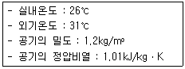
- 840W
- 3,500W
- 5,⑤0W
- 8,720W
(정답률: 60%)
64. 다음 설명에 알맞은 건축화 조명방식은?
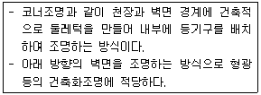
- 코퍼조명
- 밸런스조명
- 코니스조명
- 다운라이트조명
(정답률: 50%)
65. 피뢰설비방식 중 케이지방식(완전보호)에 대한 설명으로 옳은 것은?
- 건물 각 부분 기타 위쪽에 수평도체를 건축물에 떨어져서 설치하는 방법이다.
- 피보호물을 연속된 망상도체나 금속판으로 싸는 방법이다.
- 건축물 상단에 밀착하여 수평도체를 설치하는 방법이다.
- 금속체를 피보호물에서 돌출시켜 수뢰부로 하는 것으로 투영면적이 비교적 적은 건축물에 적합하다.
(정답률: 71%)
66. 집합주택에서 각종 정보를 관리하는 목적으로 관리인실에 설치하는 집합주택 관리용 인터폰의 기능으로 옳지 않은 것은?
- 주출입구의 개폐기능
- 비상푸시버튼에 의한 비상통보기능
- 방범스위치에 의한 불법침입통보기능
- 전기절약을 위한 전등소등기능
(정답률: 70%)
67. 냉동기의 압축기에서 토출된 고온, 고압의 냉매증기는 응축기에서 방열하고 액화된다. 이때 방열되는 응축열로 물이나 공기를 가열하여 난방에 이용하는 장치는?
- 열펌프
- 냉각탑
- 전열교환기
- 공기조화기
(정답률: 67%)
68. 다음의 공기조화방식 중 전수방식에 속하는 것은?
- 팬코일유닛방식
- 멀티존유닛방식
- 각층유닛방식
- 2중덕트방식
(정답률: 75%)
69. 건물 내의 급수방식 중 고가수조방식에 관한 설명으로 옳은 것은?
- 단수 시에도 일정량의 급수가 가능하다.
- 3층 이상의 고층으로의 급수가 불가능하다.
- 수도본관의 영향을 그대로 받아 수압변화가 심하다.
- 위생성 및 유지, 관리 측면에서 가장 바람직한 방식이다.
(정답률: 71%)
70. 용량 1kW의 커피포트로 1L의 물을 10℃에서 100℃까지 가열 하는 데 걸리는 시간은?(단, 열손실은 없으며, 물의 비열은 4.2kJ/kgㆍK, 밀도는 1kg/L이다.)
- 3.6분
- 4.8분
- 6.3분
- 12.2분
(정답률: 57%)
71. 복사난방에 관한 설명으로 옳은 것은?
- 예열시간이 짧으므로 간헐난방에 적합하다.
- 다른 난방방식에 비교하여 쾌적감이 가장 낮다.
- 실내에 방열기를 설치하여야 하므로 실내사용공간이 감소된다.
- 천장고가 높은 공장이나 외기침입이 있는 곳에서 난방감을 얻을 수 있다.
(정답률: 71%)
72. 교류엘리베이터에 관한 설명 중 옳지 않은 것은?
- 기동 토크가 적다.
- 전효율은 40~60% 정도이다.
- 부하에 의한 속도변동이 있다.
- 직류엘리베이터에 비해 착상오차가 작다.
(정답률: 46%)
73. 다음의 증기트랩 중 기계식 트랩에 속하는 것은?
- 버킷트랩
- 벨로즈트랩
- 바이메탈트랩
- 스트레이너
(정답률: 37%)
74. 다음 중 배수관계통에 통기관을 설치하는 목적과 가장 거리가 먼 것은?
- 트랩의 봉수 파괴를 방지하기 위하여
- 배관 내 청결을 도모하기 위하여
- 배수관의 결로 방지를 위하여
- 배수의 흐름을 원활히 하기 위하여
(정답률: 48%)
75. 다음의 난방도일에 관한 설명 중 옳지 않은 것은?
- 난방도일은 실내온도만 같으면 외기온도가 다르더라도 어느 지역에서나 그 값이 같다.
- 난방도일은 추운 정도를 나타내는 지표가 될 수 있다.
- 난방도일이 크면 클수록 연료의 소비량이 많아진다.
- 일반적으로 난방도일은 HD(Heating degree day)로 표기한다.
(정답률: 68%)
76. 다음은 조명설비와 관련된 용어에 대한 설명이다. ( ) 안에 알맞은 내용은?
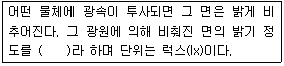
- 광도
- 휘도
- 조도
- 광속발산도
(정답률: 69%)
77. 어떤 건축물에서 옥내소화전의 설치개수가 가장 많은 층의 설치개수가 6개인 경우, 옥내소화전설비의 수원의 저수량은 최소 얼마이상이어야 하는가?
- 6.5m3
- 13.0m3
- 15.6m3
- 25.4m3
(정답률: 70%)
78. 기계적 에너지가 아닌 열에너지에 의해 냉동효과를 얻는 냉동기는?
- 흡수식 냉동기
- 터보식 냉동기
- 왕복동식 냉동기
- 스크류식 냉동기
(정답률: 66%)
79. 다음 소방시설 중 소화설비에 해당되지 않는 것은?
- 옥내소화전설비
- 스프링클러설비
- 연결송수관설비
- 소화기구
(정답률: 68%)
80. 할로겐램프에 대한 설명 중 옳지 않은 것은?
- 흑화가 거의 일어나지 않는다.
- 백열전구에 비해 수명이 길다.
- 광속이나 색온도의 저하가 적다.
- 휘도가 낮아 시야에 광원이 직접 들어오도록 설치하여도 무방하다.
(정답률: 59%)
5과목: 건축관계법규
81. 건축허가신청에 필요한 기본설계도서 중 배치도에 표시하여야 할 사항이 아닌 것은?
- 대지의 종, 횡단면도
- 주차동선 및 옥외주차계획
- 1층 및 기준층 평면도
- 대지에 접한 도로의 길이 및 너비
(정답률: 59%)
82. 다음 중 노상주차장을 설치할 수 있는 곳은?
- 고속도로
- 자동차전용도로
- 고가도로
- 종단경사도가 3%인 도로
(정답률: 66%)
83. 다음의 직통계단의 설치와 관련된 기준 내용 중 ( ) 안에 알맞은 것은?
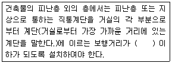
- 30m
- 35m
- 45m
- 60m
(정답률: 71%)
84. 노외주차장에 설치할 수 있는 부대시설의 총면적은 주차장 총 시설면적의 몇 %를 초과하여서는 안 되는가?
- 5%
- 10%
- 15%
- 20%
(정답률: 60%)
85. 부설주차장을 가장 많이 설치하여야 하는 시설물은?(단, 시설 면적이 1,000m2인 경우)
- 숙박시설
- 종교시설
- 판매시설
- 위락시설
(정답률: 71%)
86. 건축물의 용도 분류 중 제2종근린생활시설에 속하는 것은?
- 일반음식점
- 도서관
- 여관
- 한의원
(정답률: 61%)
87. 그림과 같은 건축물의 높이는?(단, 망루부분의 수평투영면적은 당해 건축물 건축면적의 1/10이다.)
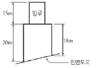
- 19m
- 20m
- 22m
- 35m
(정답률: 70%)
88. 다음 중 허가대상에 속하는 용도변경은?
- 종교시설을 단독주택으로 변경
- 종교시설을 교육연구시설로 변경
- 숙박시설을 업무시설로 변경
- 제2종근린생활시설을 숙박시설로 변경
(정답률: 50%)
89. 다음 중 방화구조에 해당되지 않는 것은?
- 심벽에 흙으로 맞벽치기 한 것
- 철망모르타르로서 그 바름두께가 1.5cm인 것
- 시멘트모르타르 위에 타일을 붙인 것으로서 그 두께의 합계가 2.5cm인 것
- 석고판 위에 시멘트모르타르를 바른 것으로서 그 두께의 합계가 3cm인 것
(정답률: 48%)
90. 노외주차장의 출구와 입구를 원칙상 각각 따로 설치하여야 하는 노외주차장의 주차대수 규모기준은?
- 300대를 초과하는 규모
- 350대를 초과하는 규모
- 400대를 초과하는 규모
- 450대를 초과하는 규모
(정답률: 56%)
91. 보도와 차도의 구분이 없는 주거지역의 도로에서 평행주차형식의 주차단위구획기준으로 옳은 것은?
- 너비 2.0미터 이상, 길이 5.0미터 이상
- 너비 1.7미터 이상, 길이 4.5미터 이상
- 너비 2.0미터 이상, 길이 6.0미터 이상
- 너비 2.5미터 이상, 길이 5.0미터 이상
(정답률: 45%)
92. 건축물의 건축에 있어 건축물 관련 건축기준의 허용오차범위로 옳지 않은 것은?
- 출구너비 : 3% 이내
- 반자높이 : 2% 이내
- 벽체두께 : 3% 이내
- 바닥판두께 : 3% 이내
(정답률: 69%)
93. 각 층의 거실면적이 1,000m2인 15층 아파트에 설치하여야 하는 승용 승강기의 최소대수는?(단, 승용 승강기는 11인승임.)
- 2대
- 3대
- 4대
- 5대
(정답률: 43%)
94. 다음 중 허용되는 열관류율기준이 제일 높은 건축물의 부위는?(단, 중부 지역임.)
- 외기에 간접 면하는 거실의 외벽
- 외기에 직접 면하는 최상층에 있는 거실의 반자 또는 지붕
- 공동주택의 측벽
- 공동주택의 층간바닥으로 바닥 난방인 경우
(정답률: 49%)
95. 건축물을 건축하는 경우 국토해양부령으로 정하는 구조기준 등에 따라 그 구조의 안전을 확인하여야 하는 대상 건축물 기준으로 옳지 않은 것은?
- 높이가 13미터 이상인 건축물
- 층수가 2층 이상인 건축물
- 처마높이가 9미터 이상인 건축물
- 기둥과 기둥사이의 거리가 8미터 이상인 건축물
(정답률: 40%)
96. 다음 중 공작물을 축조(건축물과 분리하여 축조하는 것을 말한다.)할 때 특별자치도지사 또는 시장ᆞ군수ᆞ구청장에게 신고를 하여야 하는 대상 공작물 기준으로 옳지 않은 것은?
- 높이 6m를 넘는 옹벽
- 높이 6m를 넘는 장식탑
- 높이 6m를 넘는 기념탑
- 높이 6m를 넘는 굴뚝
(정답률: 49%)
97. 대지 안에 조경 등의 조치를 하여야 하는 건축물은?(단, 대지 면적이 200제곱미터 이상인 경우)
- 연면적의 합계가 1,200제곱미터인 공장
- 면적 4,500제곱미터인 대지에 건축하는 공장
- 관리지역(지구단위계획구역으로 지정된 지역)의 건축물
- 자연녹지지역에 건축하는 건축물
(정답률: 62%)
98. 노외주차장의 주차형식에 따른 차로의 너비기준으로 옳지 않은 것은?(단, 출입구가 1개인 경우)
- 평행주차 : 5.0m
- 직각주차 : 6.0m
- 교차주차 : 5.0m
- 60도 대향주차 : 6.0m
(정답률: 46%)
99. 바닥면적이 500m2인 학교의 교실에서 환기를 위하여 설치하는 창문 등의 면적은 최소 얼마 이상으로 하여야 하는가?(단, 기계환기장치 및 중앙관리방식의 공기조화설비를 설치하지 않은 경우)
- 10m2
- 20m2
- 25m2
- 30m2
(정답률: 47%)
100. 다음 중 주요구조부에 해당하지 않는 것은?
- 주계단
- 기초
- 기둥
- 지붕
(정답률: 49%)
직각배치형은 판매대를 직각으로 배치하여 매장 내부 공간을 효율적으로 이용할 수 있으며, 판매대 설치가 간단하고 경제적입니다. 또한 매장의 획일성에서 탈피하여 자유로운 구성이 용이하다는 것은 다양한 상품을 배치하거나 매장의 분위기를 변화시키는 등의 자유로운 디자인이 가능하다는 것을 의미합니다.